Cyber Bandits by Michael Reeder Cyber Bandits 是艺术家[Michael Reeder]的一个项目。该项目的主要重点是将 Reeder 的物理绘画风格与生成的 pfp 虚拟世界联系起来。多年来，里德的绘画利用
Cyber City Girls Club Cyber City Girls Club 统计数据 创建于大约 1 年前 5,555 代币供应 2.5% 费用 过去 7 天没有售出 Cyber City Girls Club。 Cyber City Girls Club 包含 5555 个独特的 Cyber Girl NFT Cyber City Girls Club NFT - 常见问题（FAQ） ▶
Cyber Curated 网络是一个与众不同的元宇宙。只需点击 5 次，任何人都可以在预先存在的目的地使用他们的 NFT 创建数字体验并进行分享。其中一些目的地的数量有限。 Cyber Curated 系
Cyber Gorillas Official CyberGorillas 是 3333 只随机生成的 Cyber 主题大猩猩的集合，其中包括 333 只创世纪 CyberGorillas。 重点关注功能支持的实用程序、合作伙伴关系和工具。优先考虑
Cyber Hornets Colony Club Cyber Hornets Colony Club (CHCC) 是一个收藏品品牌，拥有 8,888 件独特的 ERC-721 不可替代的代币艺术品 (NFT)，其所有权和真实性的公开证明存储在以太坊区块链上。Cyber Hornet 艺术
Cyber Keys NFT Cyber Snails项目由一群经验丰富的 NFT 交易者建立，旨在创建一个由经验丰富且相互联系的个人组成的高阿尔法社区。 该项目的使命是成为终极 NFT alpha 社区，并
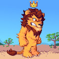 Cyber Lionz 在遥远的网络丛林中，500 名 Cyber Lionz 被从他们的模拟中拉出来，并被 Astro Labs 赋予了新的动画生活，并寄希望于有朝一日成为他们新元宇宙的完全成熟的国王和皇后
Cyber Rampage 网络横冲直撞统计 创建于 1 年多前 12 代币供应 10% 费用 过去 7 天没有售出 Cyber Rampage。 在 2075 年左右的甲骨文大战初期，文明还在瓦解的时候，“实体”从未
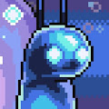 Cyber Snails Official Cyber Snails项目由一群经验丰富的 NFT 交易者建立，旨在创建一个由经验丰富且相互联系的个人组成的高阿尔法社区。 该项目的使命是成为终极 NFT alpha 社区，并
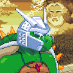 Cyber Turtles Genesis Cyber Turtles Genesis 统计数据 创建于 7 个月前 5,555 代币供应 OpenSea 验证集合 7.5% 费用 Cyber Turtles Genesis NFT 在过去 7 天内售出 69 次。Cyber Turtles Genesis 的总销售额为 12.55 万美元。Cyber Turtles Genesis NFT 的平
CyberBananas CyberGorillas 生态系统的关键部分。拥有激进的燃烧机制和完全可升级的系统，5000 个 CyberBananas 已经抵达丛林。你会正确使用它们吗？ 收集尽可能多的 CyberBanan
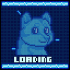 Cyberdoge-NFT CyberDoge 是控制论统治一切的 Defi Haven。以 0.05 ETH 收集 1021 个 Cyberdoges。 我们正在通过在我们的 NFT 生态系统中实现 OHM 和 TIME 创建一个自给自足的 Defi 协议。这
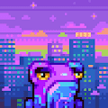 CyberFrogz Cyber Frogz 是一个面向 NFT、DeFi 和 Web 3 爱好者的社区驱动项目，没有路线图或期望。 目的: 以太坊是一个去中心化的网络，这意味着通过将去中心化作为所有
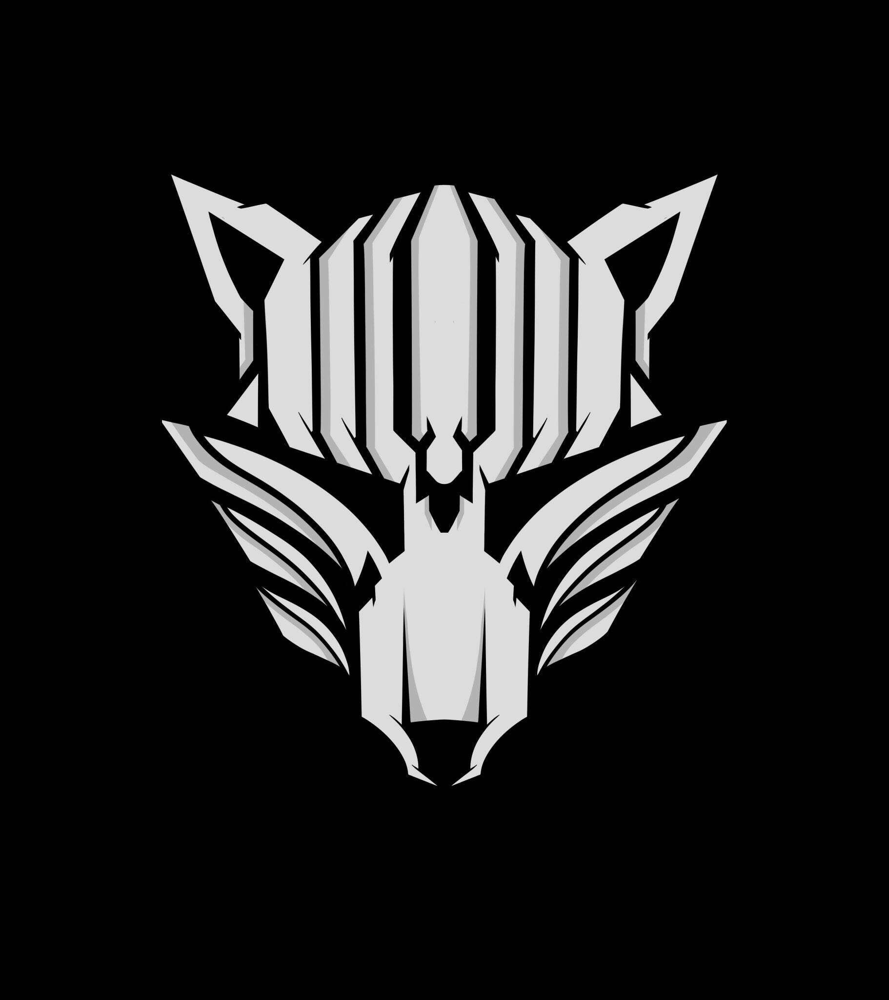 Cyberhunt Official Cyberhunt 官方统计 创建于 3 个月前 6,561 代币供应 7.5% 费用 Cyberhunt 官方 NFT 在过去 7 天内售出 5 次。Cyberhunt Official 的总销售额为 168.02 美元。一份 Cyberhunt 官方 NFT 的平均价格为 33.6 美元
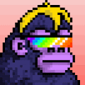 CyberKongz CyberKongz 是独特且随机生成的 2D/3D NFT 社交头像，用于您的在线体验。有些看起来很正常。有些看起来很奇怪。有些简直太酷了！也许有些甚至看起来很眼熟！为了扩展 CyberKongz
CyberKongz VX 终于到了让您拥有自己的 CyberKongz VX 作为自定义可玩元界头像的时候了。CyberKongz VX 是与 The Sandbox 合作推出的，目前正在开发将可玩头像集成到 The Sandbox 游戏中。
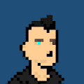 Cybernetic Research Group 控制论研究组统计 创建于大约 1 年前 949 代币供应 2.5% 费用 过去 7 天没有售出任何控制论研究组。 Cybernetic NFT 是下一代的完全链上项目，由 mint 生成。持有 Cybernetic 可授予您在去中
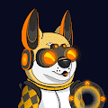 CyberShibas CyberShibas 统计 创建于 12 个月前 3,381 代币供应 2.5% 费用 过去 7 天没有售出 CyberShibas。 CyberShibas 是在以太坊区块链上生成和铸造的 5,000 个 NFT Shibas 的独特集合。受到柴犬的启
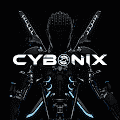 Cybonix 你现在正在进入沃登月亮的黑暗面。 这一年是 2777 年，赛博尼克斯半机械人被艾尔多神秘主义者赶出了他们的家乡 Cygonia。 由于只有 1,500 名最精锐的 Cybonix 在最
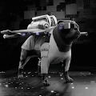 Cyborg86 CyDog NFT CYDOG86是 CYBORG86 的第二个系列。它们的创建是为了奖励持有人的朋友，这是一只无论如何都会永远和他们在一起的宠物。Cydogs 作为ERC-721
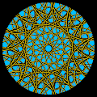 Cyclical Project 动画艺术，完全由 p5.js 代码生成，备份并存储在链上。 Sunflower Industries 上第二个用户创建的项目。 抽象的、动画的、生成的艺术，沉思现实的周期性。 从我们的每一次呼吸到
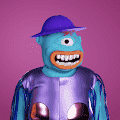 Cyclops Special Editions 独眼巨人特别版是我们2022 年路线图的第一阶段 ✅ 08.02.2022 - 步行独轮车 ✅ 11.02.202 - 变形独轮车拍卖 ✅ 15.02.2022 - 跳舞独轮车 - 第一批 ✅ 16.02.2022 - 30.02.2022 - 跳舞独轮车 - 每日和随机 💡
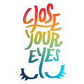 CYE ChuchuCAT VO 闭上眼睛是一个宇宙，由梦仙们捕捉的无数梦想和故事构成。 该系列从 V.0 chuchuCATs 开始，它可以穿越人们的梦想，成为小守护者。 基于全球艺术玩具品牌“NWT”，
Cypher City Cypher City 是位于以太坊区块链上的城市。这座城市由 8888 个随机生成的 Cyphers 组成，包括人类、Cyborgs、机器人、外星人、骷髅和僵尸。 Cypher City 于 2021 年 7 月 28 日推出
Daiju-Kingz Daiju-Kingz 统计 创建于 8 个月前 5,587 代币供应 2.5% 费用 5,772 名 Discord 成员 Daiju-Kingz NFT 在过去 7 天内售出 1 次。Daiju-Kingz 的总销售额为 0 美元。一个 Daiju-Kingz NFT 的平均价格为 0 美元
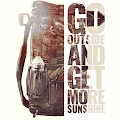 Danger Close Alpha Bugout Bags DANGER CLOSE ALPHA 提供真实的生活 资源和真实的生活技能 帮助人们为自己和家人做好准备，以 应对从自然灾害到政府暴政的任何事情。我们 正在弥合 Prepper 社区和 NFT 空间之间的
Danger Rangers Official Collection 危险游骑兵官方收藏统计 创建于 7 个月前 2,924 代币供应 2.5% 费用 26,385 名 Discord 成员 过去 7 天内没有出售任何危险游骑兵官方收藏。 危险游骑兵官方收藏稀有探索者. ▶ 什么
Daniel Punks 丹尼尔朋克数据 创建于 6 个月前 3,655 代币供应 10% 费用 Daniel Punks NFT 在过去 7 天内售出 1 次。Daniel Punks 的总销售额为 4.92 美元。一个 Daniel Punks NFT 的平均价格为 4.9 美元。有 54
DankDucks NFT Dank Ducks 是一个社区驱动的以太坊区块链上以编程方式随机生成的 NFT 集合。第一代由 6969 只随机组装的鸭子组成。以 0.025 ETH 的可访问价格，您将获得 1 个 Dank Duck NFT，它
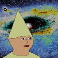 DankGnomers.wtf 欢迎来到遥远的侏儒星系。来自 Dank 星云 的 2,420 个 dank 地精正在探索 Dank 宇宙的外缘。 收藏规模： 2,420份 Dank Gnomers 价格：前420 个免费（每 tx 1 个） 其余为0.00
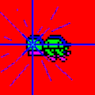 DAO Turtles Jail Turtles 是 DAO Turtles 的官方第二个系列.DAO Turtle 持有者可以免费领取他们的 Jail Turtles。一只 DAO Turtle = 一只相同铸币厂编号的 Jail Turtle。我们对这个项目未
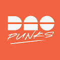 DAOpunks by Bankless DAOpunks 是 1,111 个独特 NFT 的集合。DAOpunks 的使命是使人类能够将自己从默认世界工作的令人窒息的苦差事中解放出来，并引导他们在有意义的 DAO 工作中获得有
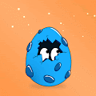 Dapper Dinos NFT Dapper Dinos 是漫游以太坊区块链的 9,999 只随机生成的恐龙的集合。Dapper Dinos 成立的初衷是成为一个家庭友好型、孩子们喜爱的、具有超高收藏价值且有趣的恐龙 NFT
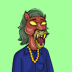 Dapper Horse Meta Clan Dapper Horse Meta Clan 统计数据 创建于 7 个月前 1,486 代币供应 10% 费用 过去 7 天没有出售 Dapper Horse Meta Clan。 第一阶段 2 月 2 日10 分钟售罄 第二阶段 LIVE 价格：1 Matic 第三阶段 TBA 价格
DASK - Dead Army Skeleton Klub DASK 是一个社区驱动的收藏品项目，从 6969 名 Klub 会员的集合开始，您可以通过这些会员访问 The Klub： · 每个 DASK 都是一个可用于元节的 3d 角色。 · DASK持有者
Dead Bears - We Were Okay 什么时候火锅？ 汤姆是 5 月 28 日，美国当天标准时间晚上 7 点。 火锅的价格是多少？ 我们的铸币价格是0.03 ETH。我们所有的艺术作品都是100%原创
Dead Ringers: Edition by Dmitri Cherniak 2022 年 1 月的每一天，我都会从算法中生成一个新输出，生成一个随机钱包地址，然后将工作发送到该地址。在最后一天，即 1 月 31 日，所有之前的死铃被放置在
Deadbears Official 一系列庆祝熊的垮台，收集了 10,000 个独特的 NFT，既有趣又暴力。每个 NFT 将花费 0.05 ETH。 欲了解更多信息，请加入我们的 Discord 服务器。 13日星期五发售。该范
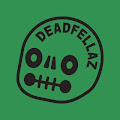 DeadFellaz Deadfellaz 感染 S1 NFT - 常见问题 (FAQ) ▶ 什么是 Deadfellaz 感染 S1？ Deadfellaz Infected S1 是一个 NFT（不可替代令牌）集合。存储在区块链上的数字艺术品集合。 ▶ 存在多少 Deadfellaz Infected S1 代币？ 总共
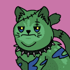 Deadfrenz Collection Deadfrenz 是 Deadfellaz 作为配套项目为您带来的 13,000 个独特 NFT 的集合，在美学和实用性方面与原始系列相得益彰，特别关注游戏。 Deadfrenz 由 13 个物种组成，每个物种都有自己的一系列


 是一个收藏品品牌，拥有 8,888 件独特的 ERC-721 不可替代的代币艺术品 (NFT)")